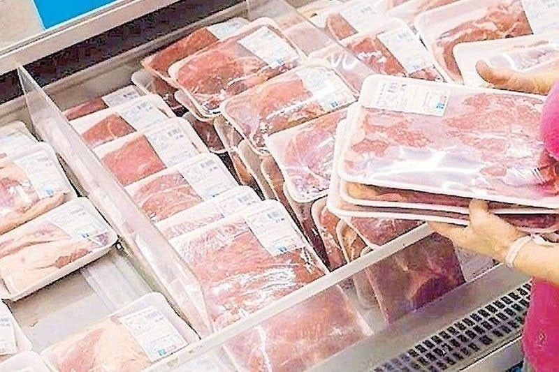
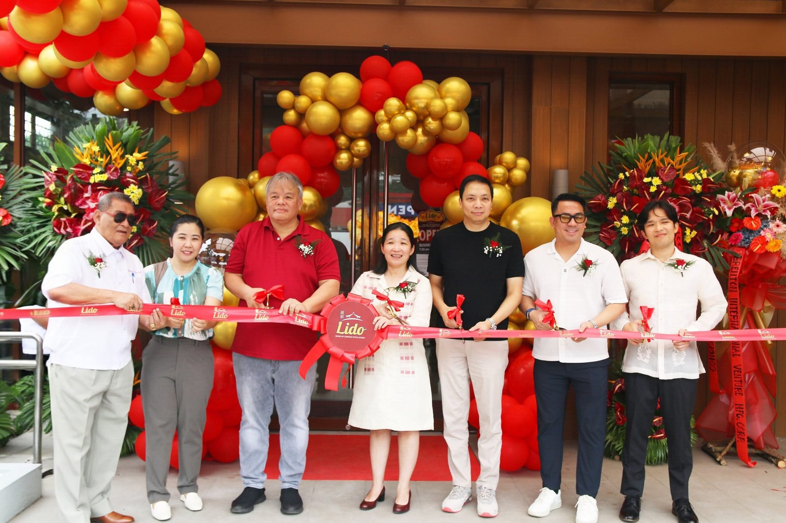

DA seeks higher pork tariffs as live hogs slip to ₱120–160/kg
21 Sep 2026
Philstar: Agriculture Secretary Francisco Tiu Laurel Jr. said the DA is pushing to restore pork import tariffs toward prior levels — currently 15% in-quota and 25% out-quota through 2028, down from 30%/40% — while farmgate for live hogs sits around ₱120–160 per kilo. The agency is also looking at higher special safeguard duties (slower to stand up) and backing an industry ask for a ₱210/kg farmgate floor as a target, not a mandate — Tiu Laurel said DA lacks the legal power to enforce a floor or price cap and would instead lean on buyers. Separately, NMIS is inspecting wet-market vendors for imported meat that should be in freezers and has already flagged shortfalls; holiday demand is expected to lift retail meat modestly (preferable band ~1–3%). Operator read for Calamba: this is protein cost risk, not a press release about farmers. If tariffs climb and the soft floor sticks, the cheap-import buffer shrinks into Christmas — lock pork and lechon-adjacent quotes now, watch wet-market vs cold-chain price gaps, and don’t build Dec plate math on August farmgate.
Open Philstar
Torikizoku — Japan’s #1 yakitori — opens Serendra BGC Oct 12
20–21 Sep 2026
Daily Tribune / Orange Magazine: Torikizoku, founded in Osaka in 1985 and running 600+ stores across Japan, sets its first Philippine restaurant for October 12, 2026 at Serendra, Bonifacio Global City. Street installations of yellow mascot Torikki (day-visible, night-lit) already point pedestrians toward the site with QR codes for updates and advance reservations. Local campaign line is “Toriki Tayo” — group chat to group table, social dining over freshly grilled chicken skewers. Operator take: this is a format bet on grilled-chicken gathering, not a sub-₱100 value fight. BGC Serendra rent and skewer theatre are Metro signals first — useful for menu language (shareable chicken, table energy) if you ever pitch group or celebration traffic south of Mega. Until a second PH pin lands outside BGC, treat it as format intel, not a Calamba competitor. The tell is whether the next door goes mall corridor or stays lifestyle district.
Open Daily Tribune · Open Orange Magazine

Lido Antipolo opens on Circumferential Rd — 90th-year Chinese family dining
16 Sep 2026
Philippines Graphic: Lido Cocina Tsina cut the ribbon on its Antipolo restaurant along Circumferential Road with Mayor Jun Ynares and owners Annie Wong and Mark Wu — another door in the brand’s 90th anniversary year (Binondo roots since 1936). The space is modern and spacious with a dedicated function room for birthdays and reunions; opening LTO is Sichuan Shrimp with Cashew Nuts nodding to Antipolo’s cashew tradition, alongside signature Pugon-Roasted Asado. Wong framed the open as welcoming a new community while keeping Lido a place for everyday meals and celebrations. Operator read: Chinese family dining with a real function room still clears east-Metro rent when the brand has 90 years of trust. For a Calamba opener, the lesson is celebration capacity + local LTO (cashew) — not that Antipolo is your catchment. Pair with Nuvali’s named Chili’s / Matcha Tokyo mix (PhilSTAR Property): south lifestyle dining is thickening into Q4; decide whether you compete on group tables, dessert traffic, or stay out of mall gravity.
Open Philippines Graphic · Open PhilSTAR Property (Nuvali mix)